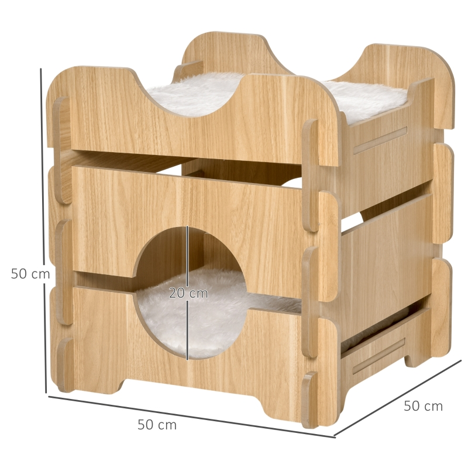
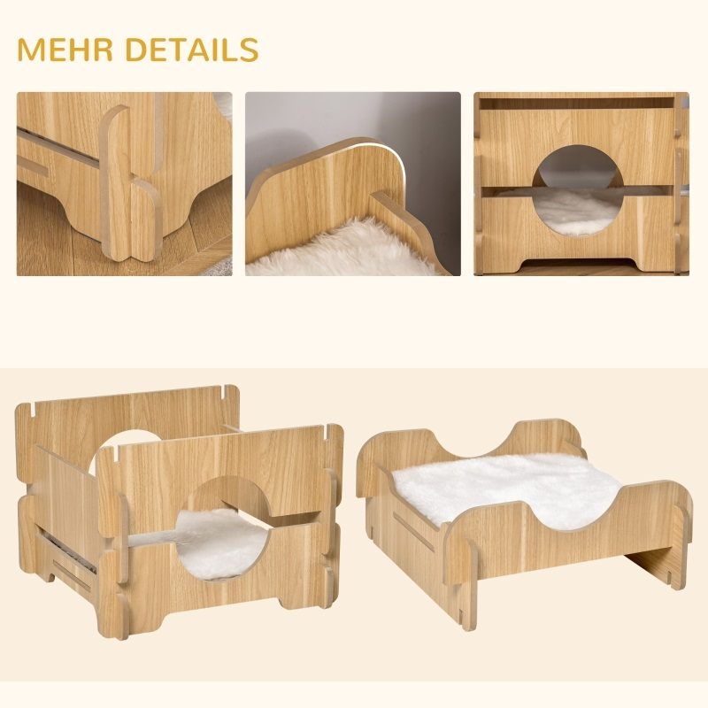

Multifunktionell kattbädd
Om produkten
Multifunktionell kattbädd med stilren design, perfekt för din katt.
Din katt förtjänar en varm, bekväm och lättillgänglig plats att koppla av och vila på. Vår kattbädd Lund är perfekt för detta! Katthuset kommer med 2 avtagbara och tvättbara mjuka plyschkuddar, vilket gör det till den perfekta viloplatsen för dina fyrbenta vänner. Fram och bak har båda en dörröppning, bekvämt för dina husdjur att komma in.
Pris
999 kr
Produktinformation
- Färg: Ljus ekträ
- Material: Polyester, ek
- Totala mått: L 50 x B 50 x H 50 cm
- Lämplig för katter upp till 4,5 kg